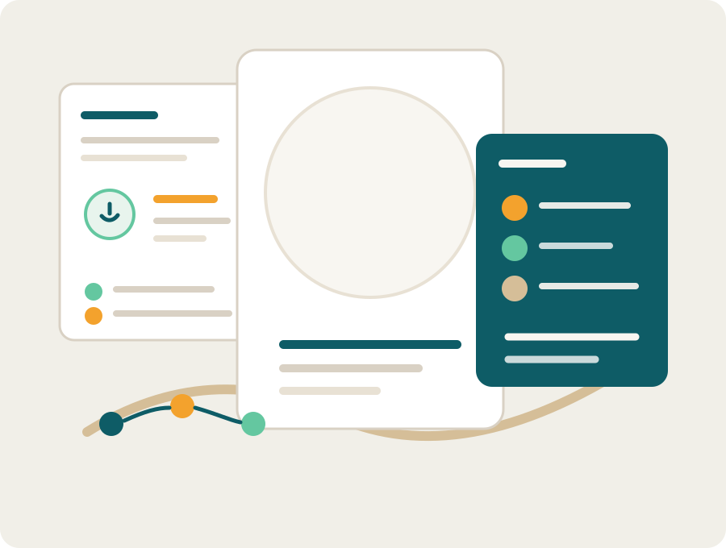

What's underneath the meltdown
A short reference that translates a tantrum from "bad behavior" into a nervous-system event, plus what kinds of responses the research supports.
Tools for parents
Short, plain-language references organized by topic. Designed to be useful inside ordinary parenting days, not a blog archive to scroll through.

Featured tool · Available now
See what's typical at your child's age across language, motor, social, and cognitive milestones, so you can notice patterns over time without turning every observation into a worry.
Inside the tracker
Featured tool · Available now
Ask any developmental question and get a real, science-based answer instead of a generic search result. Powered by Claude, grounded in the same research that underpins the classes. Free to try.
What to ask
The library keeps growing. Every tool here is available now and free, and more get added over time. Each one is built from current developmental research and shaped by what parents actually run into during the day.
A short reference that translates a tantrum from "bad behavior" into a nervous-system event, plus what kinds of responses the research supports.
Holding a "no" calmly when a child is testing autonomy, without scripts and without losing your own footing.
What the research says about repair, for the child and for the adult, when a moment goes sideways.
A calm look at sleep development across the first year: what's typical, what varies, and what the research can and can't tell us.
Why toddler sleep changes, what routines help, and how to read night-waking without panic.
Plain-language guidance grounded in current research: context, content, and the difference between background TV and shared viewing.
What the research suggests about how different kinds of screen use interact with language and attention in the early years.
A short reference that explains co-regulation in plain language: what it actually is, and why it matters more than scripts.
Tools for the adult side of the room: noticing your own activation, what helps, and why it isn't selfish.
Free tools now. Deep understanding with the class.
The tools in this library give you a calm framework for hard moments. The toddler class explains why those moments happen, in the brain, the nervous system, and the developmental arc of ages 1–3.
What the class covers
Move your mouse or use ↑ ↓ to play.